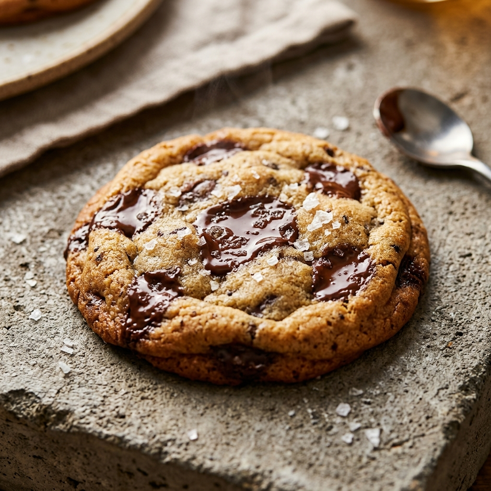
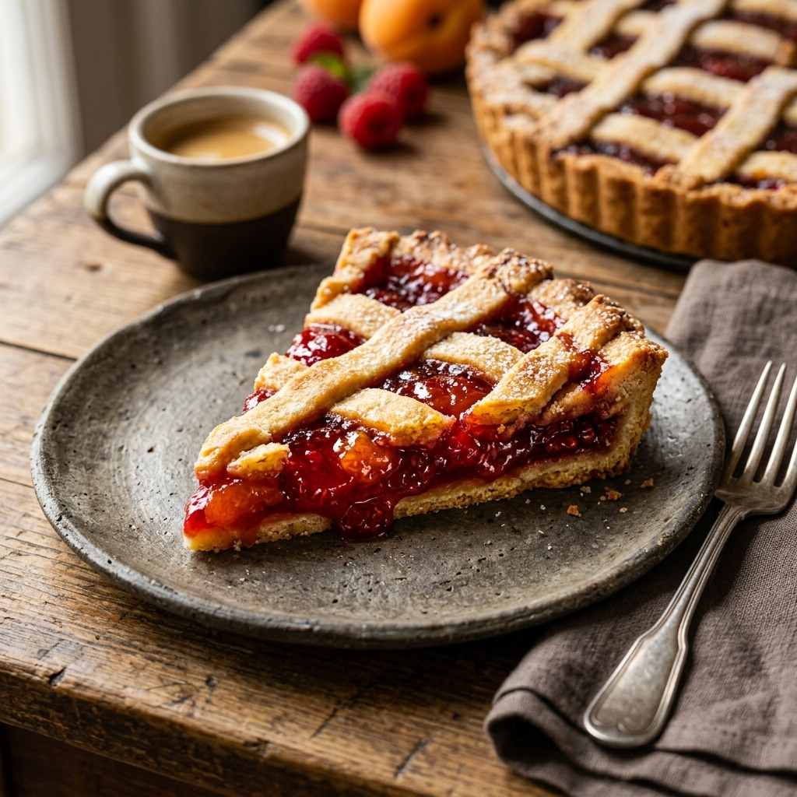
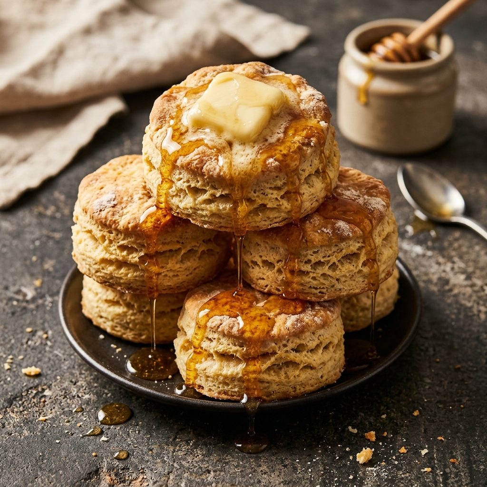

Cookies & Biscuits
Handcrafted in our pastry studio. We pair high-end American cookie recipes with traditional Italian biscuit techniques, using raw organic sugar and coastal salts.
Chewy & Dense Cookies

01ARCH • Chocolate Chunk Monolith
A study in salt and smoke. Hand-engineered cookie with 74% single-origin Malabar chocolate chunks, unrefined organic jaggery from Maharashtra, and a sprinkle of cold-smoked sea salt harvested from the Konkan coast. Baked to ensure a crispy rim and molten center.
 02
02
ARCH • Oatmeal Cranberry Pecan
Thick-rolled whole oats, dried wild cranberries, and toasted Goan pecans sweetened with organic raw cane sugar. Rich, chewy texture with nuttiness and fruit acidity.

03ARCH • Brown Butter Snickerdoodle
Crafted using slow-browned butter for a rich caramel aroma. Rolled in high-grade Ceylon cinnamon and organic sugar crystals before baking, yielding a crackled surface and soft center.
Crisp & Flaky Biscuits
 04
04
ARCH • Cantucci Toscani al Pistacchio
Traditional double-baked Italian biscotti packed with green pistachios and white chocolate chunks. Extra crisp and designed to be dunked in hot lungos or macchiatos.

05ARCH • Flaky Buttermilk Biscuit
A study in layering. Multi-layered flaky buttermilk biscuits baked fresh every hour and served warm. Accompanied by a slab of house-whipped honey butter and sea salt.
 06
06
ARCH • Baci di Dama (Lady's Kisses)
Delicate hazelnut sand-cookies sandwiched together with a rich, single-origin Malabar dark chocolate ganache. Small, crumbly, and decadent.